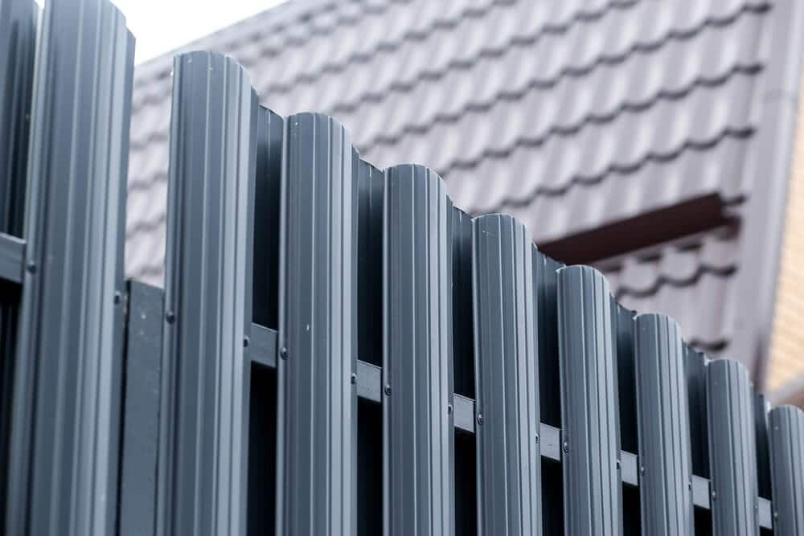

In This Guide
- Aluminum is one of the easiest fence materials to clean, and mild soap, warm water, and a soft brush handle most dirt.
- Five simple steps cover the job: wipe, wash, rinse, dry, and check the finish as you go.
- Skip bleach, solvents, acids, steel wool, and power washers, because they can dull or strip the coating.
- Clean at least once a year, and more often when humidity, mildew, or pool splash hits the fence.
Aluminum stays one of the most popular fence materials, and easy cleaning is a big reason why. It resists corrosion, weighs little compared with other metals, and holds a finish well, so keeping it looking sharp takes far less work than most fence types.
Even so, every fence collects dust and grime over time. This guide from Big Easy Fence covers a gentle five-step routine for an aluminum fence, the products to steer clear of, and the maintenance habits that keep it in good condition.
Why Aluminum Is Easy to Clean
People choose aluminum for its low upkeep, its durability, and its clean, bright look. But the outdoors still takes a toll. Rain, humidity, and sun leave the surface dingy over time, and dirt carrying fertilizer, lawn treatments, or grass clippings can stain or fade the paint on the fence.
The fix is regular, gentle cleaning. Aluminum rewards a little effort, and you will not need harsh products to get results. A soft cloth, a bucket, and a hose cover nearly everything, so the tools you need are simple and cheap. Save the specialty products for a problem that plain soap cannot solve, and check with a professional before trying them. Check the manufacturer's care instructions for your fence too, since some warranties expect owners to keep the finish clean.

Five Steps to a Cleaner Aluminum Fence
Work in this order and use the gentlest option at each step. You should not need anything stronger than dish soap. Pick a cool, shaded time of day if you can, because soap dries on a hot surface before you have a chance to rinse it. Work one section at a time so no part of the fence sits with soap on it.
1. Wipe the Surface With a Damp Cloth
Start by wiping the fence with a damp cloth. Moisture softens and loosens dried debris such as insect and bird droppings, and it lifts the top layer of dust. Soaking the cloth in warm water helps, since warmth loosens stuck-on grime.
2. Wash With Mild Soap and a Soft Brush
For marks and stains the cloth did not remove, mix a little liquid dish soap into warm water. Scrub with a soft bristle brush or a non-abrasive pad, working over the marks until they lift. Take your time on stubborn spots rather than pressing hard.
3. Rinse Thoroughly
Wash the soap and dirt away with a garden hose, or pour water over the fence from a bucket. Rinse from top to bottom so dirty water does not leave streaks as it dries. Rinse well, because dried soap can dull the surface. A power washer is too strong for fence finishes, so leave it in the shed.
4. Dry With a Clean Towel
If the fence is small enough, wipe it dry with a clean towel. A dry, smooth surface gives a nicer shine and keeps dust from clinging, and it helps prevent water spots. On a long fence, rinsing well from top to bottom does the same job.
5. Inspect the Fence While You Are There
Cleaning is the best time to look things over. Check for chips in the finish, loose fasteners, sticking hinges, and anything else that needs attention. Catching a small chip early is much cheaper than fixing rust or corrosion later.
What to Avoid When Cleaning
Not every cleaner is safe for a painted or coated aluminum fence. Keep these away from it:
- Bleach-based cleaners. They can fade or damage the paint.
- Strong chemical cleaners. Solvents, acids, and other harsh products can harm the finish.
- Abrasive tools. Steel wool and rough scrubbers scratch the coating and cause discoloration.
- High-pressure spray. A power washer can damage the metal and the finish.
Keeping Your Aluminum Fence in Shape
A few habits stretch the life of the fence and save you from costly restoration later.
- Clean on a schedule. Once a year is enough in a normal setting. Near a pool, or anywhere humidity and mildew build up, clean more often.
- Inspect regularly. Check hinges, fasteners, rails, and posts for looseness, damage, or unevenness.
- Touch up chips. Use paint made for aluminum, matched to the fence color.
- Look after the gates. Check alignment, tighten loose screws, and keep hinges moving smoothly.
- Protect the fence day to day. Do not stack materials against it, and be careful with string trimmers along the base.
- Mind the sprinklers. Irrigation spray that hits the fence day after day can leave mineral spots, so adjust the heads to point away from it.
When to Bring in a Professional
A gentle wash handles dirt, but it cannot fix bent rails, damaged posts, or a finish that has worn through. When cleaning uncovers that kind of problem, professional fence repair can bring the fence back to shape. For cleaning tips that skip the pressure washer altogether, see how to clean a fence without a pressure washer.
Want Help With Your Aluminum Fence?
If cleaning turns up damage or you are planning a new aluminum fence, tell us what you are working with and we will help.